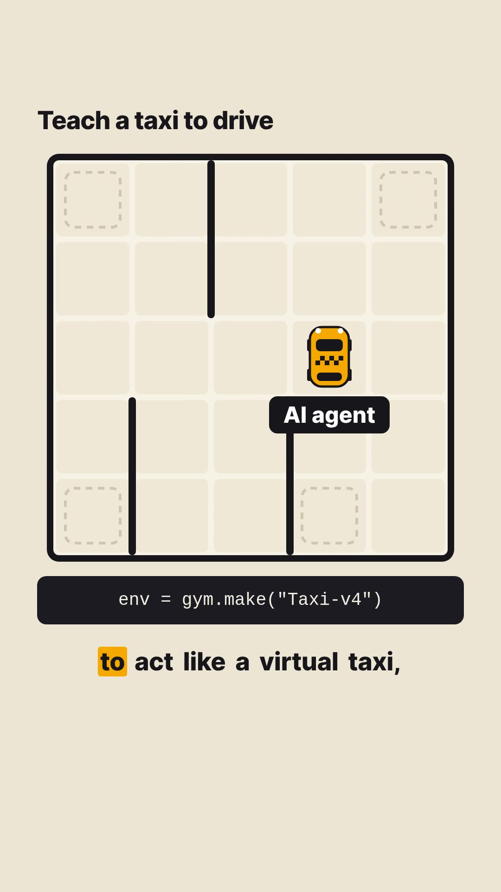
1 · 2.2 s
tiny AI agent to act like a virtual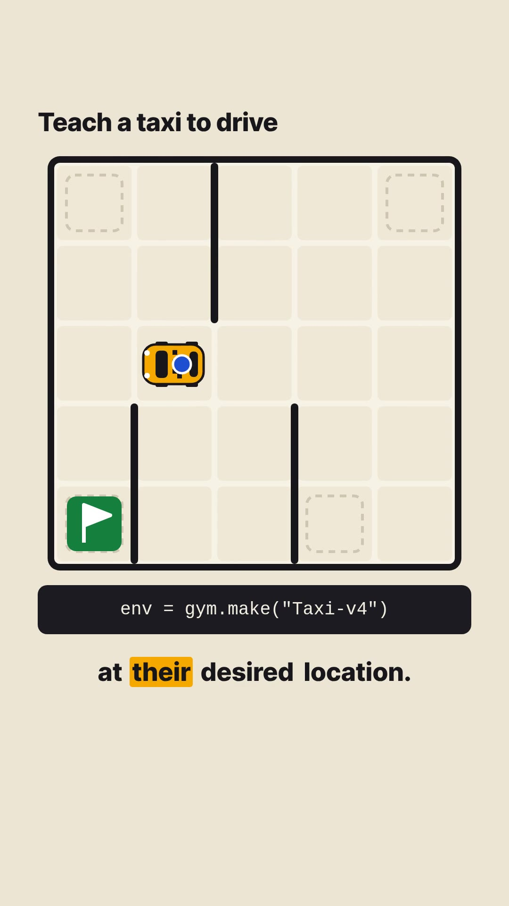
2 · 6.5 s
drops them off at their desired location.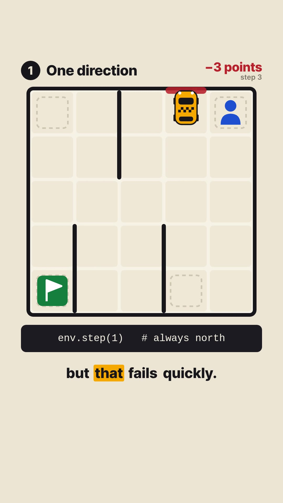
3 · 10.8 s
direction, but that fails quickly.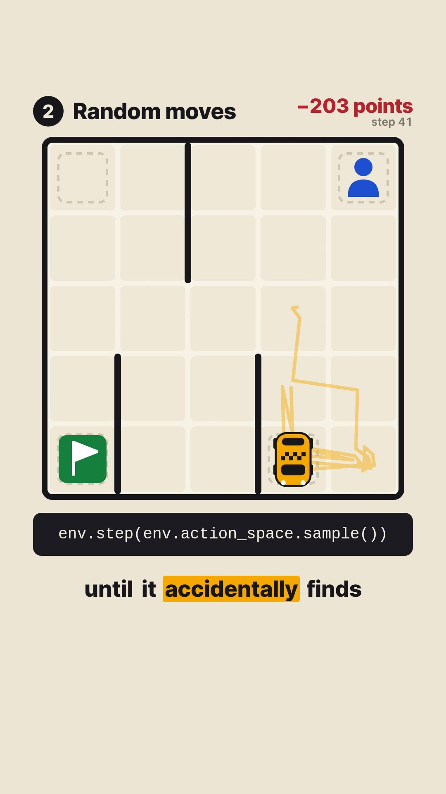
4 · 15.2 s
randomly until it accidentally finds the passenger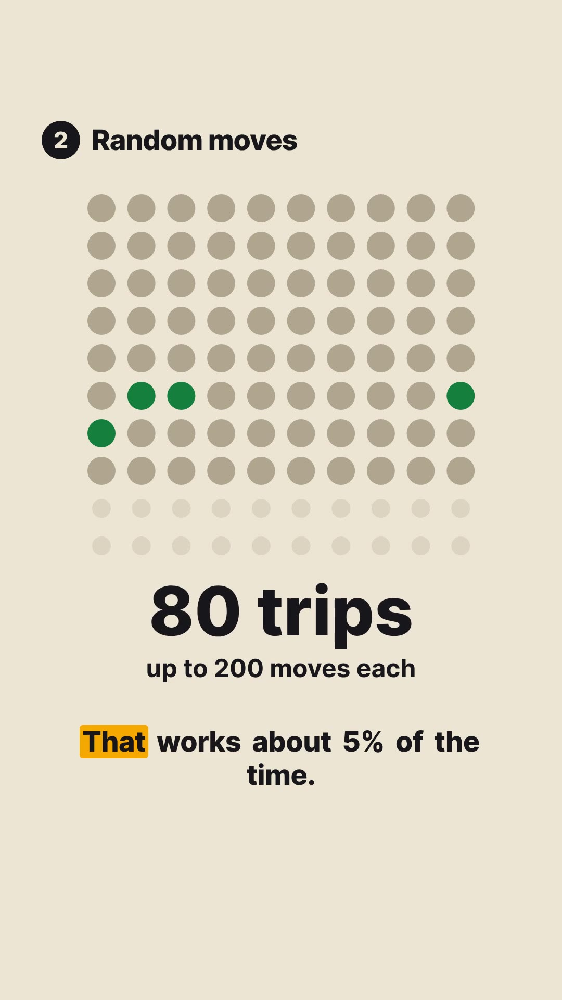
5 · 19.5 s
That works about 5%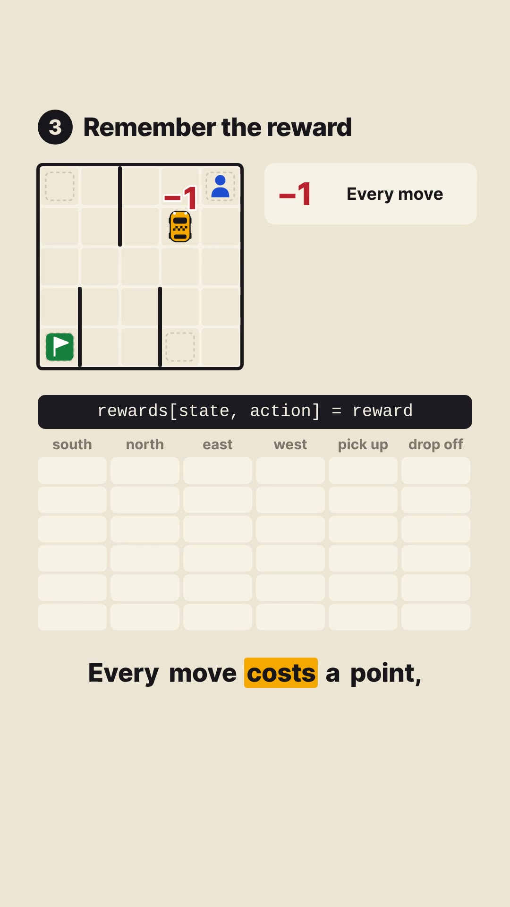
6 · 23.8 s
Every move costs a point,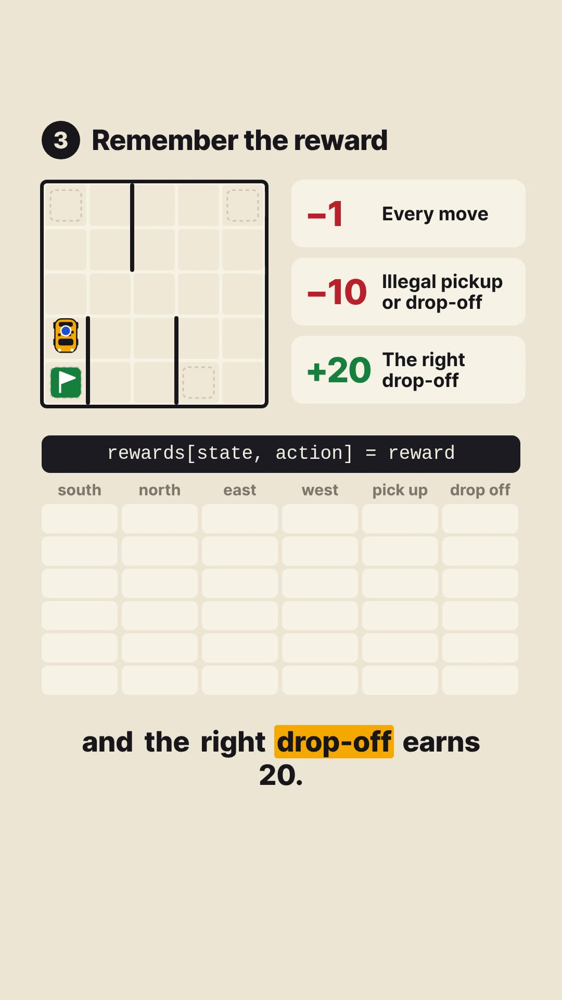
7 · 28.2 s
and the right drop-off earns 20.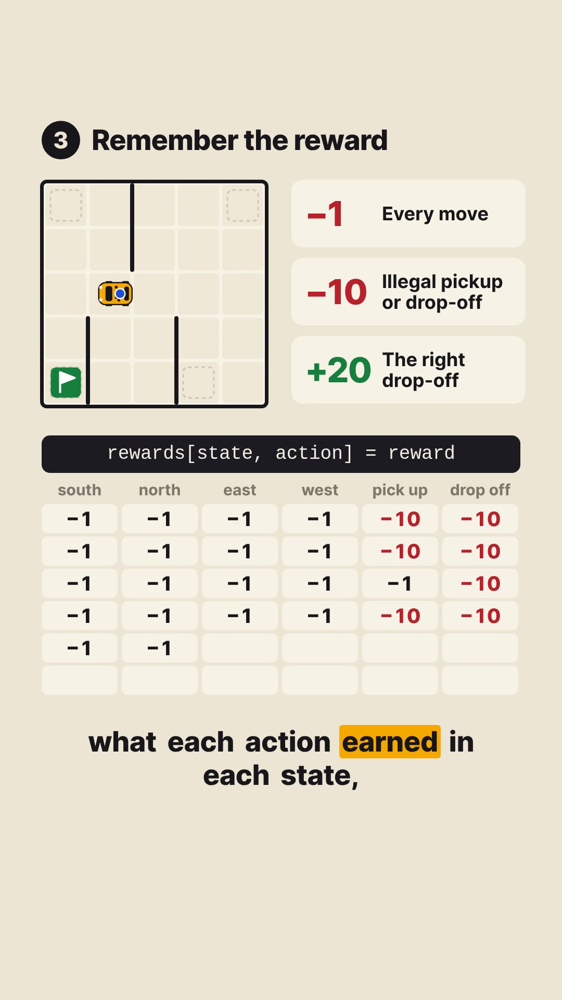
8 · 32.5 s
action earned in each state,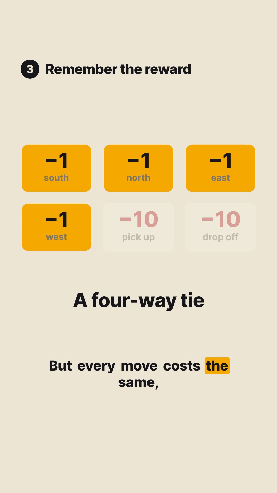
9 · 36.8 s
every move costs the same, so it drives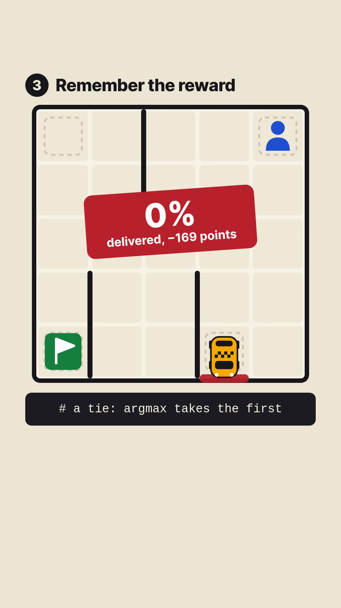
10 · 41.2 s
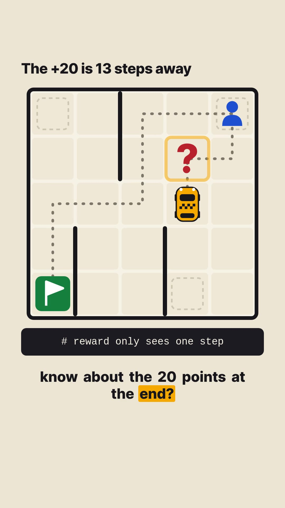
11 · 45.5 s
20 points at the end? That's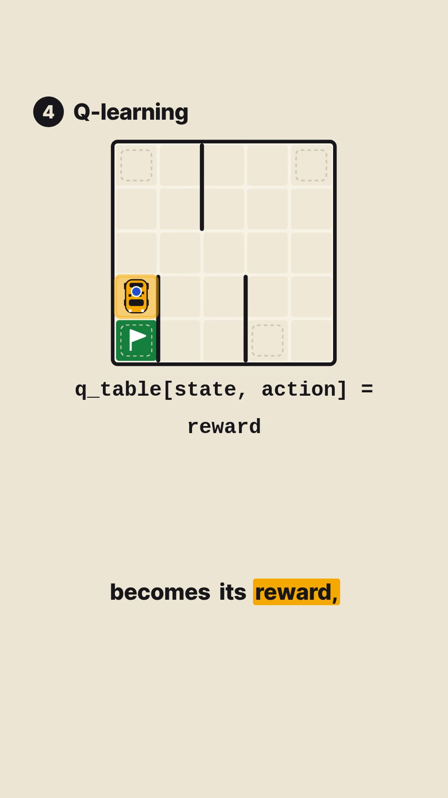
12 · 49.9 s
becomes its reward plus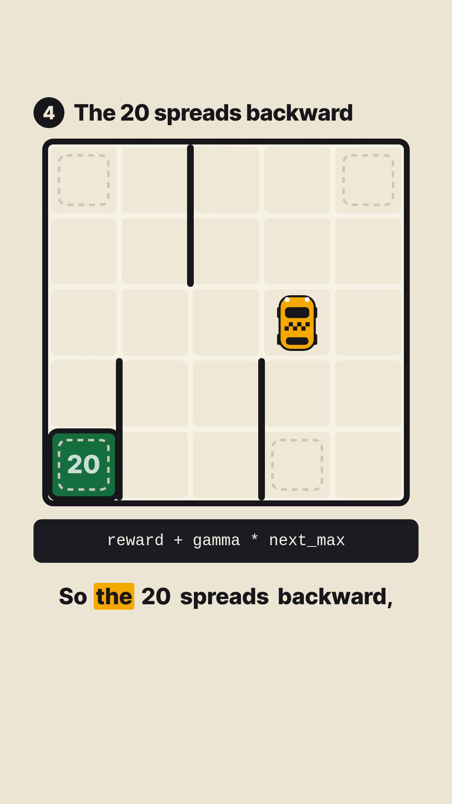
13 · 54.2 s
So the 20 spreads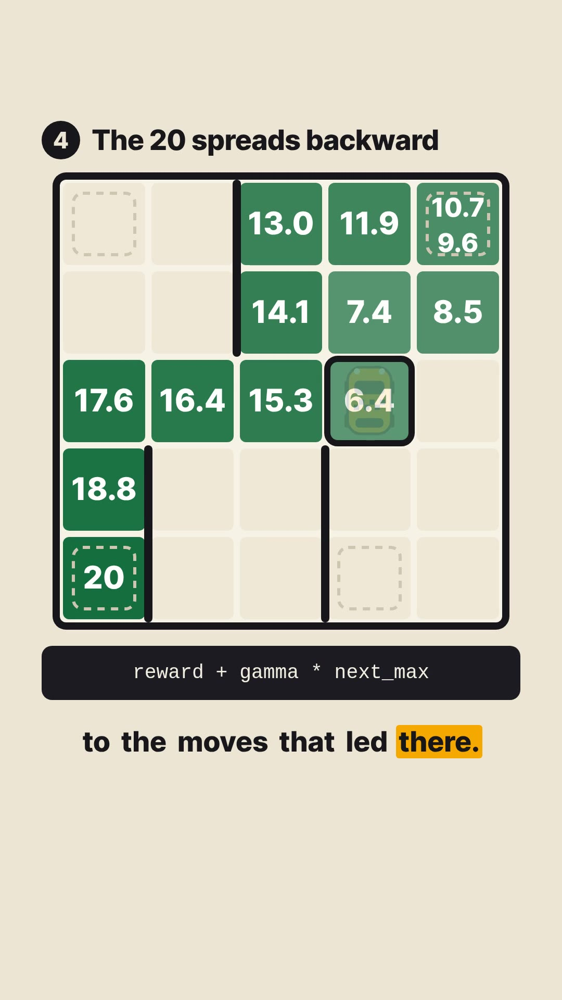
14 · 58.5 s
moves that led there.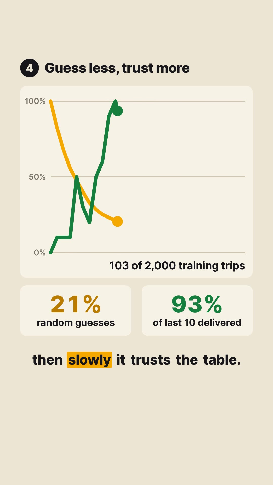
15 · 62.9 s
then slowly it trusts the table.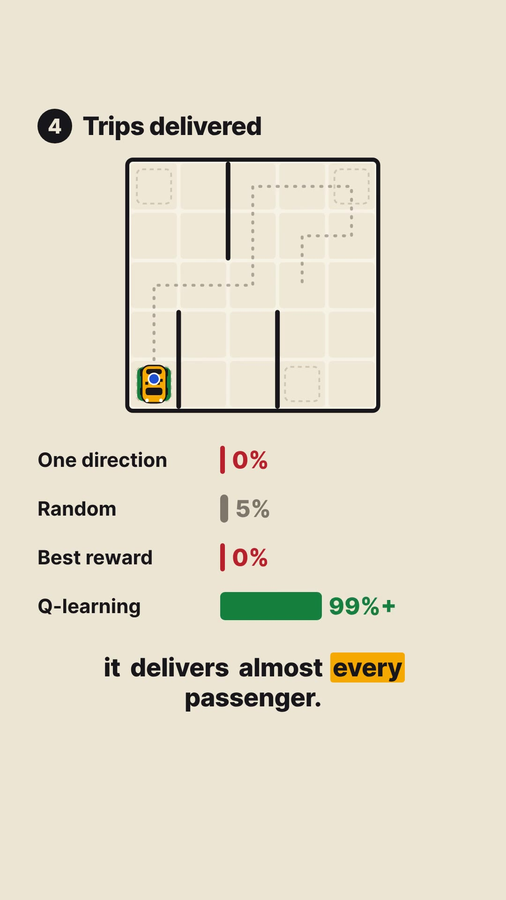
16 · 67.2 s
delivers almost every passenger.